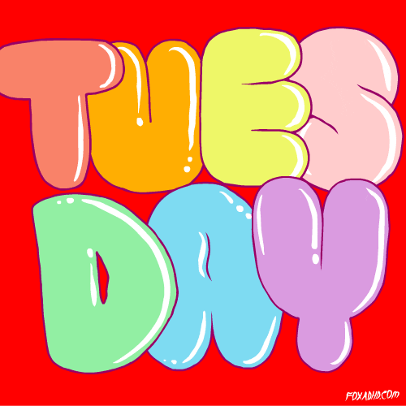
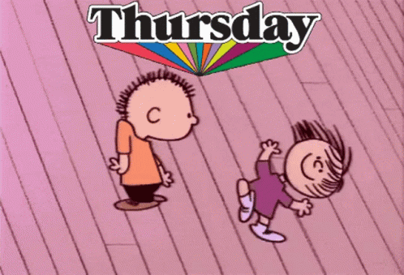

Orarul meu

Luni
Orarul lectiilor |
8.15-9.00 | L.Romana |
9.10-9.55 | L.Romana |
10.10-10.55 | Matematica |
11.05-11.50 | Biologie |
12.15-13.00 | Geografie |
Un curs practicat de mine dupa lectii in acea zi este arta vorbirii.Pentru mai multe informatii puteti consulta siteul:
Oratorica
Marti
Orarul lectiilor |
8.15-9.00 | Ed.Fizica |
9.10-9.55 | Geografia |
10.10-10.55 | Ed.economica |
11.05-11.50 | Fizica |
12.15-13.00 | Chimia |
13.10-13.55 | L.engleza |
14.05-14.50 | Istoria |

Dupa sfarsitul zilei de Marti deobicei am pictura in continuare va voi prezenta o lista cu cateva stiluri in care pictez:
REALISM
- Realismul este un stil de artă pe care majoritatea oamenilor îl consideră „arta reală”.
Acest lucru se datorează faptului că încearcă să descrie subiectul așa cum apare în viața
ABSTRACTISMUL
- Arta abstractă este opera de artă care nu seamănă cu nimic din „viața reală”. Este un stil de artă care nu este reprezentativ în mod intenționat
și caută să-și atingă punctul sau subiectul folosind forme, forme, culori și texturi.
DADAISM
- Dadaismul a fost o mișcare culturală și artistică născută în Elveția în 1916. În acea perioadă, Europa se afla în plin Primul
Război Mondial și orașul Zurich a devenit un refugiu pentru mulți intelectuali și artiști care au încercat să scape de conflict.
Miercuri
Orarul lectiilor |
8.15-9.00 | L.Romana |
9.10-9.55 | Istoria |
10.10-10.55 | Fizica |
11.05-11.50 | L.italiana |
12.15-13.00 | L.italiana |
12.15-13.00 | L.romana |
In zilele de miercuri obisnuies sa fac voluntariat la centrul Artico mai jos veti vedea cateva din evenimentele organizate cu ajutorul meu:
- „Play With Us”, ediția a XIII-a
- ARTico pentru TINEri – Arta Fotografiei
- „Autoportretul sufletului” – EVENIMENT marca Clubul Voluntarilor ARTICO
Joi
Orarul lectiilor |
8.15-9.00 | L.engleza |
9.10-9.55 | L.Romana |
10.10-10.55 | L.romana |
11.05-11.50 | Dezvoltarea personala |
12.15-13.00 | Geografie |
12.15-13.00 | L.italiana |

Vineri
Orarul lectiilor |
8.15-9.00 | Istoria |
9.10-9.55 | Educatie societate |
10.10-10.55 | L.romana |
11.05-11.50 | Matematica |
12.15-13.00 | Matematica |
12.15-13.00 | Ed.fizica |
Ziua de vineri este preferata mea, deoarece timpul de dupa scoala obisnuies sa-l petrec cu prietenii mei prin parcuri sau uneori organizam picnicuri cu famia,
iar seara urmaresc diferite filme jos voi atasa unele dintre cele mai preferate: